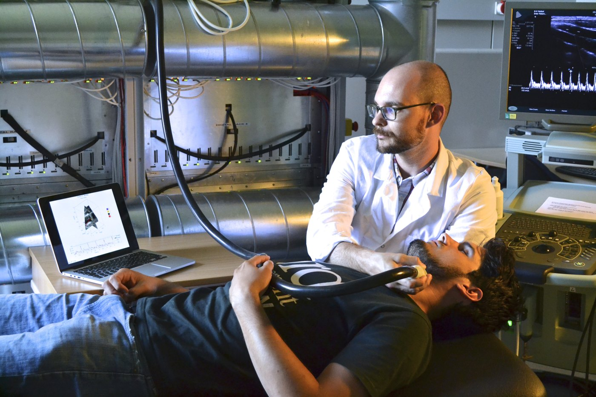

The experience
David Bradway spent fifteen months at the Technical University of Denmark during his Whitaker postdoctoral experience. Working with Jørgen Arendt Jensen continued a collaboration between his host and home research groups.
The perspective
His work included real-time processing of Doppler ultrasound data and visualization of blood-flow measurements. In his 2020 reflection from Duke, he described an ongoing shift from engineering practice toward scientific research, alongside increasing project-management and laboratory responsibilities.
